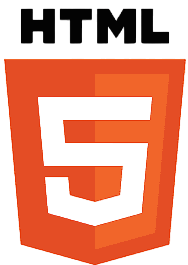
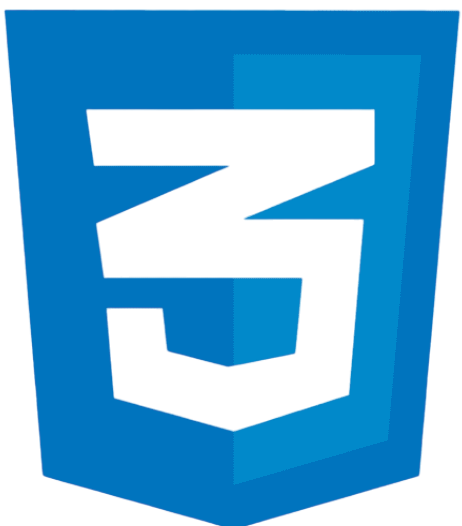
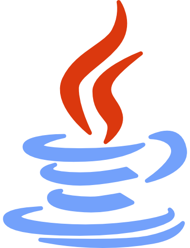
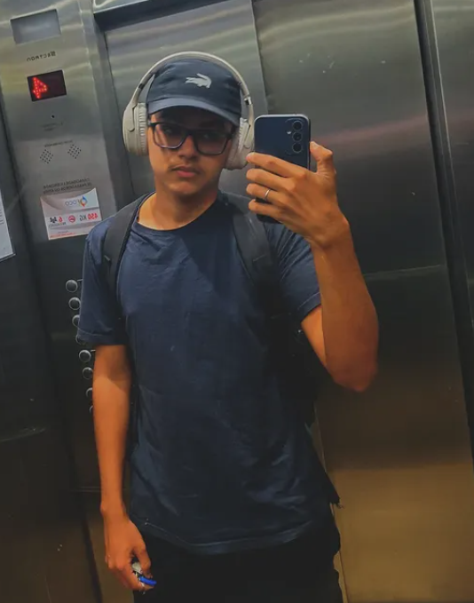

CRIANDO OPORTUNIDADES ATRAVÉS DA TECNOLOGIA..
Meu nome é Kayan da Matta, e atualmente curso Análise e Desenvolvimento de Sistemas na Fatec São José dos Campos. Estou em busca de uma oportunidade para iniciar minha trajetória profissional na área de tecnologia e acredito que a Ball, com seu compromisso com diversidade e inovação, seja o ambiente ideal para meu desenvolvimento.
Sempre fui conectado à tecnologia e encontrei no curso uma forma de transformar essa afinidade em carreira. Ao longo dos estudos, venho adquirindo conhecimentos em Java, Python, HTML, CSS, JavaScript (básico), Flask, MySQL Server e AWS, além de desenvolver APIs e participar de projetos utilizando Scrum, Design Thinking e metodologias ágeis. Essas experiências fortaleceram minha capacidade de trabalhar em equipe, colaborar em sprints e lidar com desafios práticos no desenvolvimento de sistemas e sites.

MINHAS ESPECIALIDADES.

HTML
"HTML (Hypertext Markup Language) é a linguagem base usada para estruturar o conteúdo da web. Ele organiza o layout dos elementos, como textos, imagens e links, permitindo que páginas sejam construídas e apresentadas de forma clara e funcional."

CSS
CSS (Cascading Style Sheets) é a linguagem de estilo usada para definir o visual das páginas web. Com ele, é possível aplicar cores, fontes e layouts, trazendo personalização e design aos elementos que foram estruturados pelo HTML."
Python
Python é uma linguagem de programação versátil, simples e poderosa. Utilizada em desenvolvimento web, automação, análise de dados e inteligência artificial, destaca-se por sua legibilidade e ampla comunidade, facilitando a criação de soluções.

Java
Java é uma linguagem de programação robusta e multiplataforma. Muito usada em sistemas corporativos, aplicativos móveis e soluções web, é conhecida por sua confiabilidade, desempenho e presença em grandes projetos no mercado global.
AWS
AWS (Amazon Web Services) é uma plataforma de serviços em nuvem que fornece infraestrutura e ferramentas para criar e escalar aplicações. Com recursos como servidores virtuais e bancos de dados, oferece segurança e flexibilidade para empresas.
MySQL
MySQL é um sistema de gerenciamento de banco de dados relacional amplamente utilizado no mercado. Ele permite armazenar, organizar e acessar informações de forma eficiente, sendo muito usado em aplicações web e sistemas corporativos.

MUITO PRAZER,SOU KAYAN DA MATTA
Olá, meu nome é Kayan da Matta, tenho 20 anos e estou cursando Análise e Desenvolvimento de Sistemas. Sou centrado em tecnologia e desenvolvimento de software, com grande interesse em desenvolvimento web, programação e inovação.
No momento, estou me aprofundando em conceitos de desenvolvimento web, banco de dados e metodologias como o SCRUM, que considero essenciais para entregar soluções eficazes e com qualidade.
MEUS PROJETOS.
EASY SCRUM
Easy Scrum
Site desenvolvido pela equipe Echo durante o primeiro semestre do curso de ADS. Seu principal objetivo é incentivar e ensinar o uso da metodologia ágil Scrum, tornando o conteúdo acessível a diferentes perfis de leitores, desde iniciantes até profissionais em formação.
BotEcho
BotEcho
BotEcho é uma IDE educacional inovadora desenvolvida pela equipe Echo com foco em oferecer uma experiência completa para engenheiros, estudantes e desenvolvedores que desejam aprender e otimizar seus códigos de forma prática e inteligente.
PORTFOLIO
Portfolio Pessoal
Meu maior projeto desenvolvido indivídualmente, criado para apresentar fatos sobre mim e as minhas habilidades técnicas de programação, aplicando boas práticas de estrutura e estilização para construir um site funcional e visualmente organizado.
CRUD
CRUD
O sistema CRUD desenvolvido em Java e MySQL permite cadastrar e gerenciar alunos e cursos. A aplicação exibe os dados em uma tabela integrada ao banco de dados, permitindo visualizar alunos ativos e inativos, além de gerar relatórios para cada categoria.
Em breve!
Projeto em andamento...
Em breve!
Projeto em andamento...